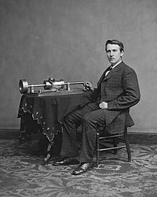

Fonografo
El fonógrafo fue el primer aparato común para grabar y reproducir sonido desde la década de 1870 hasta la década de 1880. El fonógrafo fue inventado por Thomas Alva Edison. En sus formas posteriores, también se llama gramófono (como una marca registrada desde 1887, como un nombre genérico en el Reino Unido desde 1910). Las formas de onda de vibración del sonido se registran como las desviaciones físicas correspondientes de una ranura en espiral grabada o impresa en la superficie de un cilindro o disco giratorio, denominado "registro". Para recrear el sonido, la superficie se gira de manera similar, mientras que un lápiz de reproducción rastrea la ranura y, por lo tanto, vibra, reproduciendo muy débilmente el sonido grabado. En los primeros fonógrafos acústicos, el lápiz vibraba un diafragma que producía ondas de sonido que se acoplaban al aire libre a través de un cuerno que se quemaba, o directamente a los oídos del oyente a través de auriculares de tipo. Mientras que otros inventores producían dispositivos que pudieran grabar, el fonógrafo de Edison fue el primero en reproducir el sonido grabado.
Bombilla incandescente

El fonógrafo de Edison fue innovador, pero se le restó cierta importancia al considerarlo una simple novedad. El concepto que verdaderamente cambiaría el mundo fue otro: la bombilla incandescente. Las bombillas eléctricas existían desde principios del siglo XIX, pero eran delicadas y de corta duración debido a sus filamentos, la parte que produce la luz. Una de las primeras formas de luz eléctrica, la luz de arco de carbono, se basaba en el vapor de varillas de carbono calentadas por una batería para producir luz. Pero había que encenderlas a mano y las bombillas parpadeaban, silbaban y se quemaban con facilidad. Otros diseños eran demasiado caros y poco prácticos para su uso generalizado. Las de Edison, en cambio, eran baratas, prácticas y duraderas. En 1879, después de años de tratar de mejorar obsesivamente el concepto de las bombillas, presentó una bombilla que podía durar un récord de 14,5 horas. (Relacionado: Los ganadores del Nobel más polémicos de la historia) "Mi luz es por fin perfecta", alardeó Edison a un periodista del New York Times ese año. Cuando la gente se enteró de la existencia de la bombilla, acudió en masa a Menlo Park, y cientos de personas vieron el laboratorio (que ahora brillaba con luz eléctrica) en una demostración pública el 31 de diciembre de 1879. "[La] opinión de los científicos, así como la opinión unánime de los no científicos, fue que Edison había producido en realidad la luz del futuro", informó el New York Herald. A su vez, un inventor negro llamado Lewis Latimer perfeccionó la mejora de Edison, haciendo que los filamentos de las bombillas fueran más duraderos y trabajando para fabricarlas de forma eficiente. Mientras tanto, Edison estableció una empresa de electricidad y trabajó en innovaciones que harían la luz eléctrica aún más accesible.